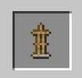
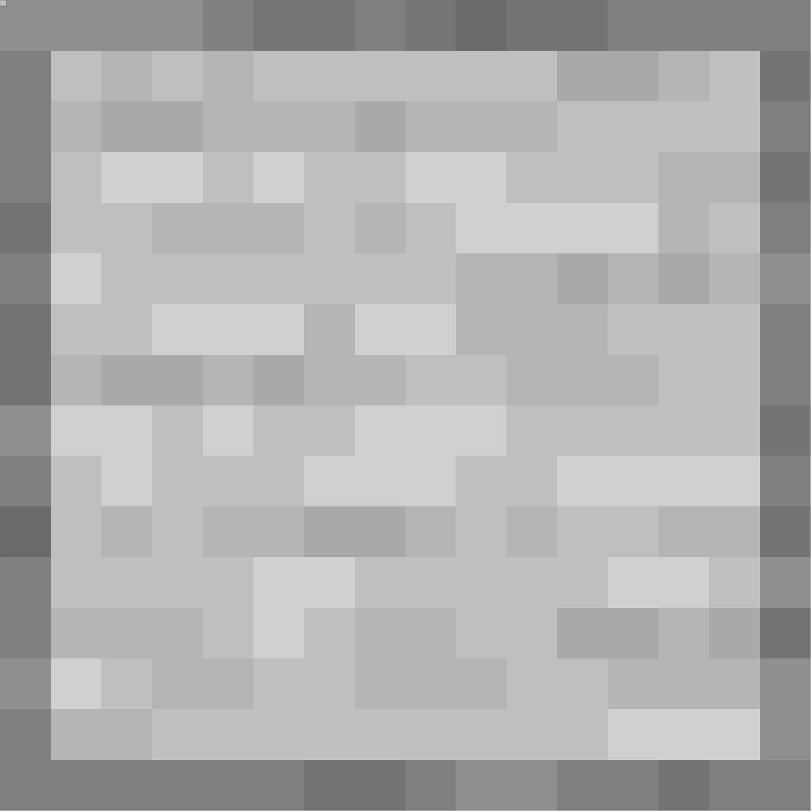
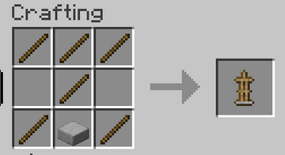

El soporte para armaduras sirve para exponer tus armaduras
Se consigue en una mesa de crafteo con 6 palos y 1  losa de piedra lisa.


 mesa de crafteo con 6
mesa de crafteo con 6  palos y 1 mesa de crafteo con 6 palos y 1
palos y 1 mesa de crafteo con 6 palos y 1